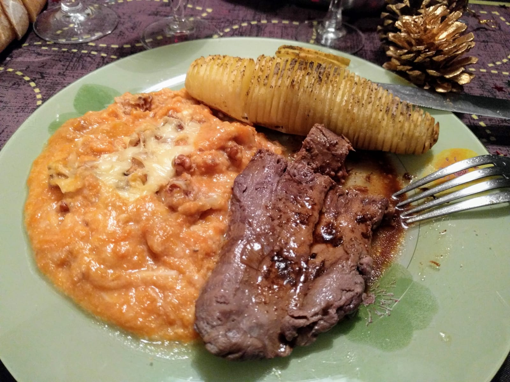

Steaks de cerf flambés à l'Armagnac

Ici avec une patate-hérisson
et du gratin aux potiron et aux noix.
Pour trois personnes :
- Trois steaks de cerf (d'environ 1.5cm d'épaisseur)
- Un verre de vin rouge assez puissant
- Une grosse échalote
- Une demi-seconde d'Armagnac
- Sel, poivre, huile d'olive
- Éplucher et émincer l'échalote. Mettre les steaks dans un petit récipient avec les morceaux d'échalote et le vin rouge, et les faire mariner pendant quelques heures. Pour que ça marine bien sans avoir besoin de trop de vin, on peut ajouter sur le récipient quelque chose de lourd pour créer un peu de pression;
- Chauffer une poêle à feu vif. Avec une poêle en fonte, c'est idéal, on n'a pas besoin de mettre de gras ; sinon on peut pettre un peu d'huile d'olive. Sortir les steaks et les éponger un peu avec du papier absorbant pendant que la poêle chauffe bien.
- Faire revenir les steaks 50 secondes de chaque côté (il faut que ça fasse du bruit tout de suite, sinon la plaque n'est pas assez chaude), puis verser l'Armagnac et faire flamber en dehors du feu.
- Faire reposer les steaks (en dehors de la poêle !) deux minutes à couvert avant de les servir ; pendant ce temps, on peut déglacer ce qui reste d'Armagnac et de sucs dans un peu d'eau pour faire une mini-sauce.
Retour à la liste des recettes